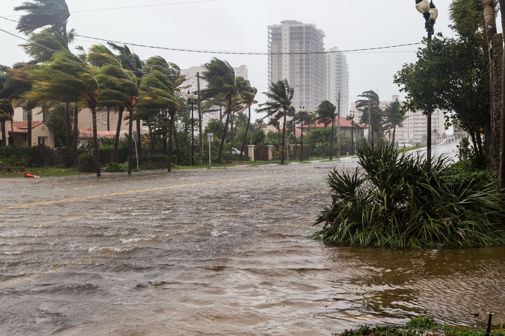

Mobilization
—Openings, generators, seawalls, drainage, elevation and other hardening work now visible in the local record.
Map readiness →Atlantic basin + street-level readiness
The mobilization, the response, the recovery—and the public data beneath each. Storm Watch turns up the urgency without confusing Florida Signal with an official warning service.

Named systems
This card does not predict local impacts. It reports the official NHC basin status and keeps the source image live. Use official local emergency guidance for decisions.
Open the NHC source ↗Live storm operating picture
The desk shifts with the event: readiness records before impact, official status during response, and recovery filings after. Counts below describe the current local permit sample—not storm damage.
Openings, generators, seawalls, drainage, elevation and other hardening work now visible in the local record.
Map readiness →Official basin status stays distinct from local observations. Emergency guidance always comes from public authorities.
Open official status ↗Repair, restoration, roof and demolition records in the sample become the early paper trail of rebuilding.
Search recovery →
Hurricane Irma archive
This is a historical image from Hurricane Irma—not a picture of current conditions. Storm Watch is designed to preserve the full sequence: hardening and mobilization before a storm, official status during it, and the repair and recovery record after it.
Readiness, already on the record
— storm-relevant records in the current map sample. Spyglass plots only source records; it does not describe storm damage.
Signal Spyglass · Storm Readiness Spotlight
Roofs, openings, seawalls, drainage, elevation and generator work by application date.
Open the storm lens on the full map →Storm Readiness Spotlight partnerYour logo hereReading the newest relevant permit filings…
Hurricane season is local
When the window changes, the Brief connects the official forecast to what matters on the ground.
Join the daily brief →